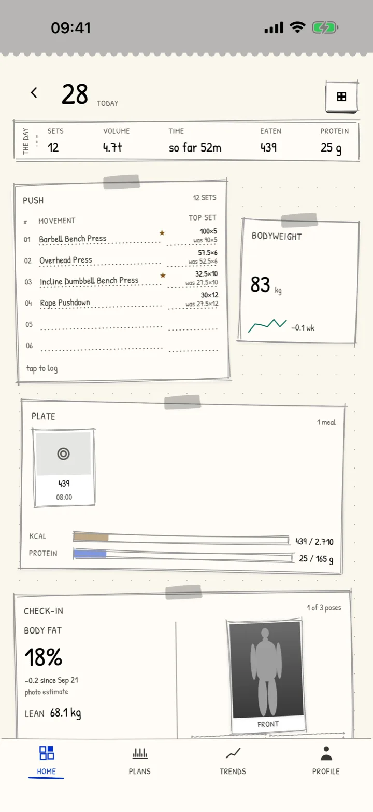
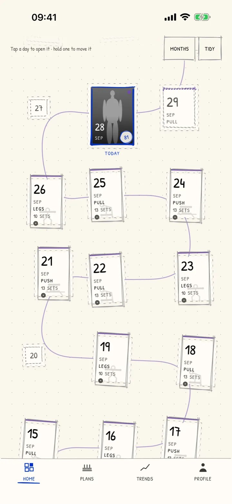

A training notebook. Every session a stamp.
Open today's page, log the sets, stamp it done. The month fills up as an album you can read across the room. Plans print the days ahead, a progress photo is read for how you're building, and a photographed meal for what's on the plate — on a phone that never asks you to sign in.
The invitation link goes here as soon as the beta opens.

Three things, in order
-
1
Open today's page
The session your plan asks for is already printed on it, with a weigh-in, a note and a photo if you take one. Any past day can be written on too.
-
2
Log the sets
Last time's numbers are pencilled in. Change what changed, and a personal record gets its postmark the moment it happens.
-
3
Stamp it done
The day goes into the album as a stamp, and Apple Health gets the workout if you let it. A month of training reads at a glance.
What it looks like
-

The album
Every day you trained, as a stamp on the month.
-

Your body, read
Each part scored from your photos, with body fat, lean mass and where it's heading.
-

The progress report
One photo, read: what leads, what's furthest behind, and the figures behind it.
What MassFrame+ adds
Logging, plans that fit your week, eating targets, meals you write in, progress reports and a drawing of your future self are free. MassFrame+ adds these, by the month or once for life.
-
Snap a meal, get the macros
A photo is read for calories and macros in about ten seconds.
-
Every lift, its own curve
Estimated one-rep max, records and progress for each movement.
-
Widgets on Home and Lock Screen
Today's plate, the plan's week and your body, at a glance.
-
Every training plan
Strength, size, specialisation and programmes for a busy week.
-
Compare any two check-ins
Two photos side by side, months apart, with what changed.
-
Progress report as a PDF
A period of training, body and eating, ready to print or send to a coach.
What it is, and what it isn't
It is
- A notebook that keeps every session, set and personal record on your phone
- An album of stamps — the month at a glance, the years behind it
- Fifteen training plans matched to your week, or your own
- Eating targets worked out from your body and the phase you're in
- A progress report from one photo, with body fat, lean mass and an estimate of where you're heading
- Apple Health, read and written, each only with your permission
- Your whole notebook exported to a file whenever you like, free
It isn't
- A coach, a dietitian or a doctor — its numbers are estimates, not medical advice
- An account. Nothing to sign up for, no server holding your notebook
- A social network. Nobody sees your album but you
- Watching you. No analytics, no tracking, no ads
Your notebook doesn't go anywhere
Everything you write stays in the app on your phone, behind its passcode. A photo leaves only when you ask for it to be read — a progress photo with four body figures, or a meal — and only after you've agreed once to AI readings, which you can turn off in Settings. Purchases go through Apple; we never see your name or card. Apple Health is never used for advertising or sold.